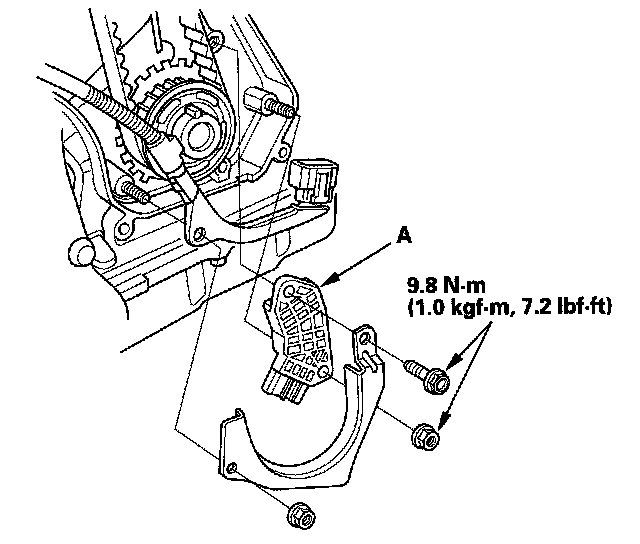

Crankshaft Position Sensor: Service and Repair
CKP Sensor Replacement
1. Move the auto-tensioner to remove tension from the drive belt, then remove the belt.
2. Remove the crankshaft pulley.
3. Remove the upper and lower front covers from the engine.

4. Remove the CKP sensor (A) from the oil pump.
5. Install the parts in the reverse order of removal.
6. Do the CKP pattern clear/CKP pattern learn procedure below.
Crank (CKP) Pattern Clear/Crank (CKP) Pattern Learn
Clear/Learn Procedure (with the HDS)

1. Connect the HDS to the data link connector (DLC) (A) located under the driver's side of the dashboard.
2. Turn the ignition switch ON (II).
3. Make sure the HDS communicates with the PCM and other vehicle systems. If it does not, go to the DLC circuit troubleshooting. Testing and Inspection
4. Select CRANK PATTERN in the ADJUSTMENT MENU with the HDS.
5. Select CRANK PATTERN LEARNING with the HDS, and follow the screen prompts.
Learn Procedure (without the HDS)
1. Start the engine. Hold the engine speed at 3,000 rpm without load (in Park or neutral) until the radiator fan comes on.
2. Test-drive the vehicle on a level road: Decelerate (with the throttle fully closed) from an engine speed of 2,500 rpm down to 1,000 rpm with the transmission in D position.
3. Test-drive the vehicle on a level road: Decelerate (with the throttle fully closed) from an engine speed of 5,000 rpm down to 3,000 rpm with the transmission in D position.
4. Repeat step 2 and 3 several times.
5. Turn the ignition switch OFF.
6. Turn the ignition switch ON (II), and wait for 30 seconds.